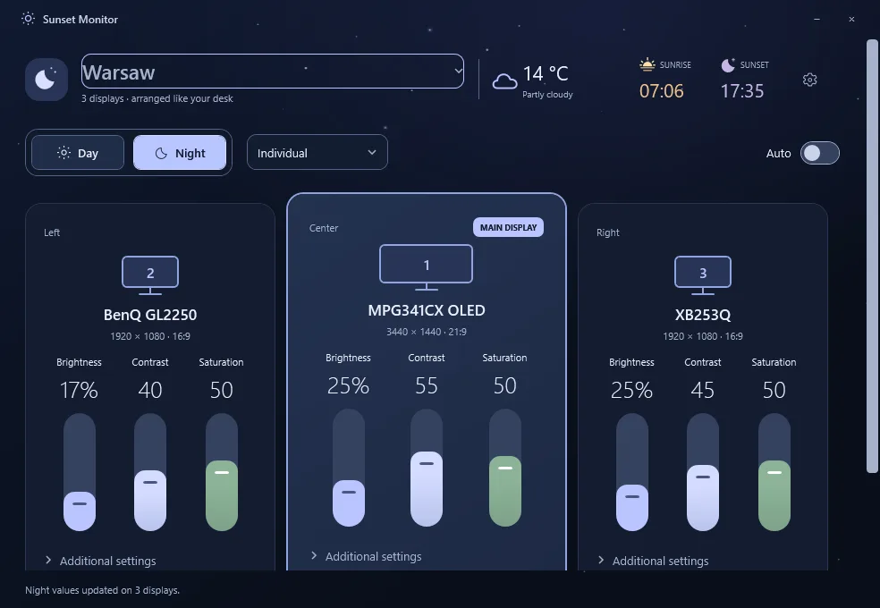

SunsetMonitor
Windows tray app that keeps external monitors in step with the sun. Separate Day and Night profiles for brightness, contrast and saturation, smooth sunrise and sunset transitions, per-monitor controls from a one-click tray panel.